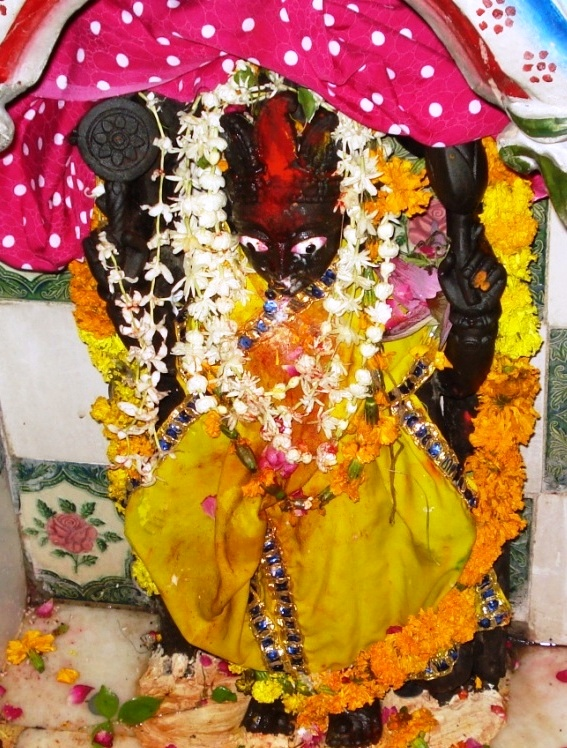

<?xml version="1.0" encoding="UTF-8"?><rss version="2.0"
	xmlns:content="http://purl.org/rss/1.0/modules/content/"
	xmlns:wfw="http://wellformedweb.org/CommentAPI/"
	xmlns:dc="http://purl.org/dc/elements/1.1/"
	xmlns:atom="http://www.w3.org/2005/Atom"
	xmlns:sy="http://purl.org/rss/1.0/modules/syndication/"
	xmlns:slash="http://purl.org/rss/1.0/modules/slash/"
	>

<channel>
	<title>Vaman Keshav &#8211; Varanasi Temples</title>
	<atom:link href="index.html" rel="self" type="application/rss+xml" />
	<link>../../../../index.html</link>
	<description>Temples of Varanasi as referred to in Kashi Khand</description>
	<lastBuildDate>Thu, 19 Jun 2025 05:16:46 +0000</lastBuildDate>
	<language>en-US</language>
	<sy:updatePeriod>hourly</sy:updatePeriod>
	<sy:updateFrequency>1</sy:updateFrequency>
	<generator>https://wordpress.org/?v=4.6.29</generator>
	<item>
		<title>VAMAN KESHAV</title>
		<link>../../../../vishnu-temples/vaman-keshav/index.html</link>
		<pubDate>Tue, 11 May 2010 11:23:39 +0000</pubDate>
		<dc:creator><![CDATA[admin]]></dc:creator>
				<category><![CDATA[Vaman Keshav]]></category>
		<category><![CDATA[Vishnu Temples]]></category>
		<category><![CDATA[ghat]]></category>
		<category><![CDATA[keshav]]></category>
		<category><![CDATA[trilochan]]></category>

		<guid isPermaLink="false">../../../../p=683.html</guid>
		<description><![CDATA[Lord Vishnu mentions one Vaman Teerth where the Lord is existing in the name of Vaman Keshav. Devotees who take bath in Vaman Teerth and worship Vaman Keshav will receive blessings of all round happiness. Vaman Teerth is not in existence now. (VAMAN KESHAV) LOCATION OF VAMAN KESHAV Vaman Keshav is located at A.2/29, Trilochan. [&#8230;]]]></description>
				<content:encoded><![CDATA[<p>Lord Vishnu mentions one Vaman Teerth where the Lord is existing in the name of Vaman Keshav.</p>
<p>Devotees who take bath in Vaman Teerth and worship Vaman Keshav will receive blessings of all round happiness. Vaman Teerth is not in existence now.</p>
<p></p>
<p style="text-align: center;"><strong>(VAMAN KESHAV)</strong></p>
<p><strong><span style="text-decoration: underline;">LOCATION OF VAMAN KESHAV</span></strong></p>
<p>Vaman Keshav is located at A.2/29, Trilochan. The temple is also known as Madhusudhan.  The temple is approachable from Birla Hospital after Machhodari upto which place, people can travel by Auto or Cycle Rickshaw. Alternatively, they can have a boat ride upto Trilochan Ghat and climb the stairs. This deity is known by the name of Madhusudan.  On Akshay Triteeya Day, many devotees worship this deity and they make offering of butter to the Lord.</p>
<p>&nbsp;</p>
<p><strong><span style="text-decoration: underline;">TYPES OF POOJA</span></strong></p>
<p>The temple is open from 05.30 a.m. to 01.00 p.m. and from 03.00 p.m. to 09.00 p.m.</p>
<p>&nbsp;</p>
]]></content:encoded>
			</item>
	</channel>
</rss>
